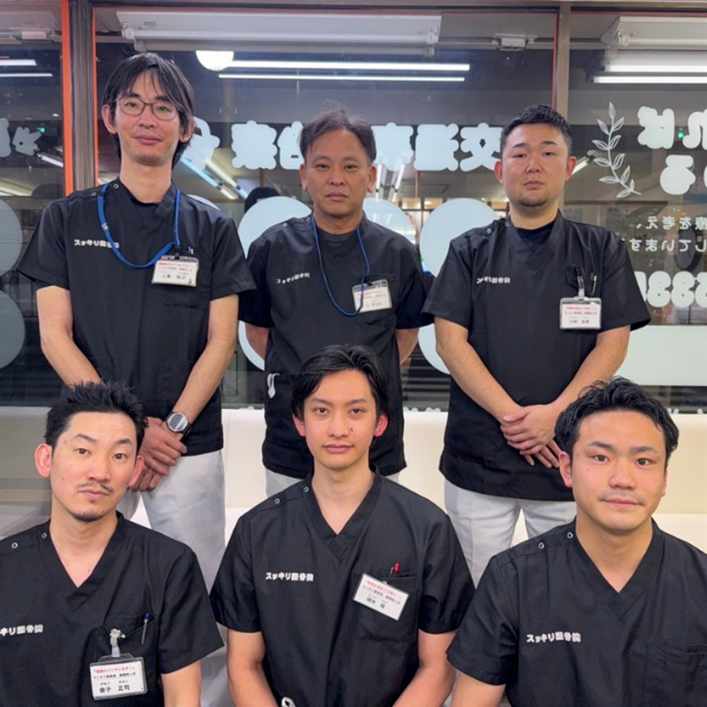

お電話でご予約
ご予約のお電話の際に、ひとことお伝えください。ご不明な点もそのままご相談いただけます。
お伝えいただく言葉「スッキリキャンペーンを見ました」
聖蹟桜ヶ丘駅から徒歩4分
年中無休・予約不要／土日祝も営業／柔道整復師が在籍
「痛い」「つらい」が、いつのまにか日常になっていませんか。
聖蹟桜ヶ丘で、国家資格をもつ柔道整復師が、
その場しのぎで終わらせない根本改善へ導きます。

スッキリキャンペーン
5,000円→1,980円
初回限定 / 40分 / 税込
さらに公式LINE登録で
「施術延長 無料券」プレゼント
スッキリキャンペーン
通常価格 5,000円
初回限定1,980円
40分／税込
※ 初めてご来院の方が対象です。ご予約は不要ですが、お時間を確約されたい方はお電話・LINEでのご予約をおすすめします。
※ 健康保険が使えるケースがあります。ご来院の際は健康保険証をお持ちください。
How to
「スッキリキャンペーンを見た」と伝えていただくだけ。
方法は3つ、どれでも構いません。
ご予約のお電話の際に、ひとことお伝えください。ご不明な点もそのままご相談いただけます。
お伝えいただく言葉「スッキリキャンペーンを見ました」
友だち追加のうえ、メッセージにひとこと添えてお送りください。延長無料券もこちらからお渡しします。
お送りいただくメッセージ「スッキリキャンペーン希望です」
ご予約なしでそのままお越しいただいても大丈夫です。受付でお伝えいただくだけで適用されます。
受付でひとこと「スッキリキャンペーンでお願いします」
公式LINE 友だち登録特典
下のボタンから友だち追加
そのままメッセージでご予約
（ご予約なしでもOK）
ご来院時に画面をご提示
※ ご登録は無料です。ご予約の変更・キャンセルもLINEからご連絡いただけます。
予約不要
「予約を取るほどでもないかな」と迷っているうちに、つらさだけが積み重なっていく—— そんな時間をなくしたくて、当院はご予約なしでのご来院を受け付けています。 年中無休、9:30〜19:30。お仕事帰りでも、お買い物のついででも。
お時間を確約されたい方は、ご予約がおすすめです。
混雑状況によってはお待ちいただく場合があります。
「この時間にどうしても」という方は、お電話またはLINEでご予約ください。
なお、健康保険が使えるケースがあります。健康保険証をお持ちください。
Worry


「もう歳だから」「仕事だから仕方ない」——そう言い聞かせて、 つらさを我慢し続けている方を、当院はこれまで何人も見てきました。
ですが、痛みや不調には必ず原因があります。そして原因は、 痛みを感じている場所そのものにあるとは限りません。
だからこそ当院は、「揉んで終わり」にしません。
体全体を検査し、原因にきちんと手を届かせることを大切にしています。
Reason
当院が大切にしているのは、「その場のスッキリ」ではなく「戻りにくい体」をつくること。
そのために、3つのことを徹底しています。
在籍する施術者は全員が柔道整復師です。解剖学にもとづいて体の状態を評価し、感覚ではなく根拠のある施術をおこないます。
腰の痛みの原因が股関節に、肩こりの原因が骨盤にあることも珍しくありません。初回は時間をかけて全身を検査し、原因を特定してからご説明します。
施術で整えた状態を保てるよう、日常でできるストレッチや姿勢の使い方をお伝えします。「通い続けないと戻る」体からの卒業を目指します。
Symptom
下記以外のお悩みもご相談ください。まずは「これって診てもらえる？」の一本のお電話からで結構です。
Menu
お悩みごとに、検査から施術までの組み立てを変えています。すべて初回限定 1,980円（40分・税込）でお受けいただけます。


Approach
いつから、どんな時に、どこがつらいのか。じっくり伺ったうえで、姿勢・関節の可動域・筋肉の状態を検査し、不調の出どころを絞り込みます。
特定した原因に対し、手技で骨格と骨盤のバランスを整えます。ボキボキと強い力を加える施術ではないため、はじめての方や女性でも安心して受けていただけます。
整えた骨格を支えられるよう筋肉・筋膜にアプローチし、最後にご自宅でのケアをお伝えします。「戻らない体」をご自身で維持できる状態がゴールです。
Difference
| スッキリ整骨院 聖蹟桜ヶ丘院 |
一般的な リラクゼーション |
整形外科 | |
|---|---|---|---|
| 施術者の資格 | ◎全員 柔道整復師（国家資格） | ×資格要件なし | ◎医師 |
| 不調の原因の特定 | ◎全身を検査して特定 | ×つらい部位をほぐす | ◯画像検査が中心 |
| 施術内容の説明 | ◎毎回、変化を共有 | △担当者による | △診察時間が短い |
| セルフケア指導 | ◎個別にお伝え | ×基本なし | △リハビリ科があれば |
| 当日の受付 | ◎空きがあれば当日OK | ◯店舗による | △待ち時間が長い |
| 営業日 | ◎年中無休 | ◯店舗による | ×土日祝は休診が多い |
※ 一般的な傾向をもとにした比較であり、すべての施設に当てはまるものではありません。
Price
ねんざ・打撲・肉ばなれ・ぎっくり腰など、原因のはっきりした急なケガは健康保険の適用対象となる場合があります。適用できるかどうかはお体の状態によって変わりますので、ご来院の際は健康保険証をご持参ください。受付で確認のうえ、ご案内いたします（慢性的な肩こり・腰痛の施術は保険適用外の自費となります）。
Flow
ご予約は不要です。そのままお越しいただいて構いません。お時間を確約されたい方は、お電話または公式LINEからご予約ください。
受付で問診票にご記入いただきます。健康保険が使えるケースがありますので、健康保険証をお持ちください。
いつから、どんな時につらいのかを詳しく伺います。ご希望やご不安も遠慮なくお話しください。
姿勢や関節の動きを確認し、不調の原因と施術の方針をご説明します。ご納得のうえで施術に進みます。
お一人おひとりの状態に合わせて施術します。痛みや強さが気になる場合はいつでもお申し付けください。
施術後の変化を確認し、ご自宅でできるケアと今後の通院ペースをご提案してお会計となります。
Staff
当院には柔道整復師の資格をもつ施術者が在籍しています。ご希望の担当者がいる場合は、ご予約時にお伝えください。

院長より
はじめまして、スッキリ整骨院 聖蹟桜ヶ丘院の院長です。私たちが目指しているのは、「もう痛みのことを考えなくていい毎日」です。 体のことで気になることがあれば、どんな小さなことでも遠慮なくお話しください。地域のみなさまの健康を、これからも支えてまいります。
Voice
10年以上お世話になってます。きっかけは股関節痛でしたが、ギックリ腰や、テレワークによる腰痛や肩こり、全身のメンテナンスで通わせてもらってます。先生方も明るく元気で、いつも親切丁寧に施術いただいてます。
今年の春にぎっくり腰を経験して、こちらに通院しています。途中で仙腸関節炎を経験しましたが、今ではかなり楽になりました。完全に完治した後も体のケアとして通いたいと思えるような、アプローチや丁寧さを感じます。
首の痛みが気になり通院していました。先生方はとても親切で、その日の状態に合わせて丁寧に施術してくださいました。施術後には、自宅でできるストレッチなども教えていただき、日常生活でも取り入れやすかったです。今では首の痛みも落ち着いています。また体に不調を感じた際には、お世話になりたいと思います。
※ 個人の感想であり、施術効果を保証するものではありません。
FAQ
ご予約は不要です。思い立ったときに、そのままお越しいただけます。年中無休で9:30〜19:30まで受け付けております。
ただし、混雑状況によってはお待ちいただく場合があります。「この時間にどうしても」という方は、お電話（042-337-5335）または公式LINEからご予約いただくと確実です。
「スッキリキャンペーンを見た」とお伝えいただくだけです。①お電話でのご予約時、②公式LINEでのご予約メッセージ、③ご来院時に受付で——どの方法でも構いません。初めてご来院の方が対象で、初回40分の施術が5,000円→1,980円になります。
公式LINEを友だち追加していただいた方に、施術の延長無料券をプレゼントしています。ご登録後、LINEのメッセージからそのままご予約いただけます。ご来院時に画面をご提示ください。
捻挫・打撲・肉ばなれなど、原因がはっきりしている急性のケガについては健康保険が適用となる場合があります。慢性的な肩こり・腰痛の施術は保険適用外（自費）となります。ご来院の際は健康保険証をお持ちください。適用できるかどうかは受付で確認のうえご案内します。
締めつけの少ない、動きやすい服装がおすすめです。お仕事帰りでスーツやスカートの場合も、その服装に合わせて施術内容を調整いたしますので、そのままお越しいただいて問題ありません。
お子さま同伴でご来院いただけます。ご予約時にお子さまの人数をお伝えいただけると、こちらでも準備がしやすく助かります。
現金のほか、クレジットカード・PayPayでのお支払いに対応しています。
強い力でボキボキと鳴らすような施術は行っておりません。お体の状態に合わせて力加減を調整しますので、痛みや強さが気になる場合は施術中いつでもお申し付けください。
ベッドを5台ご用意しているため、ご家族・ご友人と2名以上でのご来院も可能です。ご予約時に人数をお知らせください。
専用駐車場のご用意はございません。お車でお越しの際は、近隣のコインパーキングをご利用ください。
聖蹟桜ヶ丘駅 東口から徒歩4分。「これくらいで行っていいのかな」——その一歩を、私たちはいつでもお待ちしています。
期間限定の初回特別価格 1,980円 でご案内中です。
Access

緑の看板とオレンジ色の入口が目印です
京王線「聖蹟桜ヶ丘駅」の東口を出ます。
正面の店舗街をまっすぐ進みます。坂道や階段はありません。
九頭竜公園の入口が見えたら、その横のマンション1階が当院です。
緑の看板とオレンジ色の入口が目印です。道に迷われたら 042-337-5335 までお電話ください。その場でご案内します。
| 院名 | スッキリ整骨院 聖蹟桜ヶ丘院 |
|---|---|
| 住所 | 〒206-0011 東京都多摩市関戸4-6-5 ヴェルドミール聖蹟桜ヶ丘 1F |
| 電話番号 | 042-337-5335 |
| アクセス | 京王線「聖蹟桜ヶ丘駅」東口より徒歩4分 駅から店舗街をまっすぐ進み、九頭竜公園入口横のマンション1階 |
| 受付時間 | 平日 9:30〜19:30 土日祝 9:30〜18:00 ※ 13:00〜15:00 は昼休憩 |
| 定休日 | 年中無休 |
| 駐車場 | なし（近隣コインパーキングをご利用ください） |
| 設備 | ベッド5台 |
| スタッフ | 全員 柔道整復師（国家資格） |
| お支払い | 現金・クレジットカード・PayPay |
| ご持参いただくもの | 健康保険証（お持ちの方） 健康保険が使えるケースがあります。適用できるかどうかは受付で確認のうえご案内します。 |